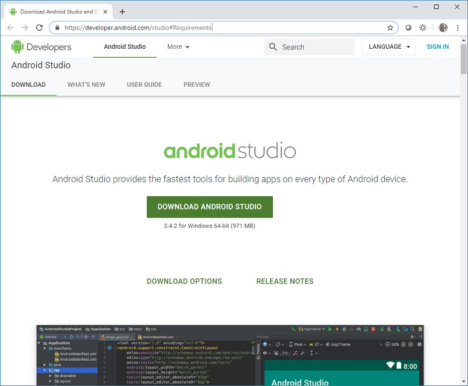
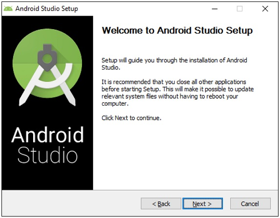
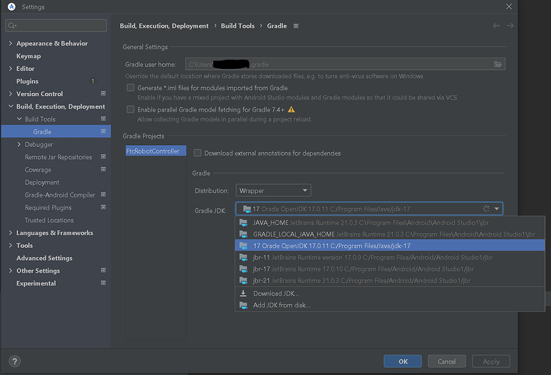
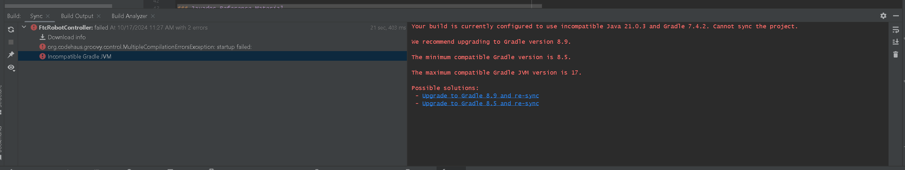
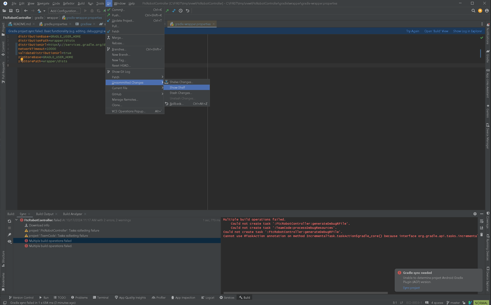
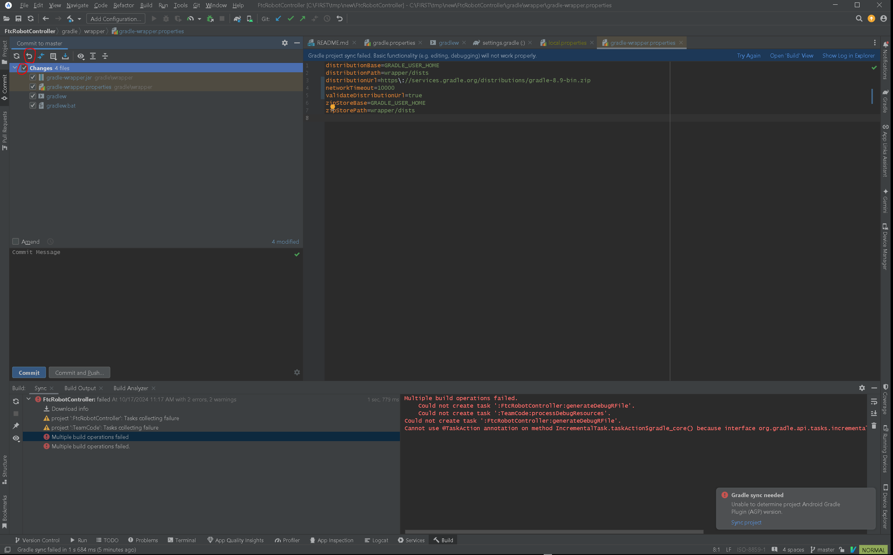

Installing Android Studio AS
Android Developer Website
Android Studio is distributed freely by Google, and the most up-to-date reference for installing and using the Android Studio software can be found on the Android developer website:
Android Studio is available on the Windows, MacOS, and Linux operating systems.
System Requirements
Before you download and install the Android Studio you should first check the list of system requirements on the Android developer’s website to verify that your system satisfies the list of minimum requirements:
Caution
With the introduction of Android Studio Ladybug, the JDK that is packaged with Android Studio is incompatible with the FtcRobotController workspace. If you install or update an existing installation to Android Studio Ladybug, you will need to install JDK 17 separately.
Upon initial load of the FtcRobotController workspace using Android Studio Ladybug, an error will be displayed during the Gradle sync and Android Studio will recommend that you upgrade Gradle. Do not upgrade Gradle.
For more detailed instructions see: Configuring
Downloading and Installing Android Studio
Once you have verified that your laptop satisfies the minimum system requirements, you can go to the Android developer’s website to download and install Android Studio:
Click on the green “DOWNLOAD ANDROID STUDIO” button to start the download process.

Accept the license terms and then push the blue “DOWNLOAD ANDROID STUDIO” button on the Android Developer webpage to download the software.

Once the setup package has downloaded, launch the application and follow the on-screen instructions to install Android Studio.
Configuring Android Studio (Ladybug and later)
Note
See the Caution above for why this is necessary.
Note
Android Studio Ladybug updates the underlying JetBrains IntelliJ version such that the interface is a VSCode look alike. The screenshots in this documentation use the JetBrains/Android Studio Classic UI which is no longer supported natively by JetBrains. To follow along, users should install the Classic UI plugin.
Install JDK 17 If you did not already have this installed independently of Android Studio. e.g. If you were using Android Studio’s bundled JDK, then when Ladybug is installed Android Studio will unhelpfully overwrite your old bundled JDK version. Note there’s a bug in the Settings → Build Tools → Gradle dialog that may make you think your old version of the JDK is there, but it is not. You must use an unbundled version of the JDK.
Go to File -> Settings and under Build, Execution, Deployment -> Build Tools -> Gradle use the Add JDK from disk option to select the newly installed JDK 17. In the image below take careful note of the directory paths for the options labeled jbr-17 and jbr-21. Note that they are the same. This is the aforementioned UI bug, and that is Android Studio overwriting your old JDK. In this image you’ll see I’ve selected the JDK that was installed independently.

Do Not Upgrade Gradle
If you have upgraded Android Studio from an earlier version to Ladybug, or you did not install and configure the JDK prior to loading a FtcRobotController workspace, then Android Studio may present an error and recommend that you upgrade Gradle.

Do not do this. The FtcRobotController build is incompatible with upgraded Gradle. If you do, you will presented with another, even more, indecipherable error.
To recover, you need to rollback the changes that Android Studio made upon that click. To do that select Git -> Uncommitted Changes -> Show Shelf

That will show the changes you have in your workspace. You want to rollback the 4 gradle files shown in the following image. You can either select the Changes checkbox to select all files, or individually select the gradle files. Note that if you have changes in your workspace that haven’t been committed, you want to be careful not to select those files or you may lose work.

Once you have the proper files selected, click the Rollback button.
Resync and that should revert you to the error that prompted you to upgrade Gradle in the first place. From there follow the instructions above to install JDK 17.